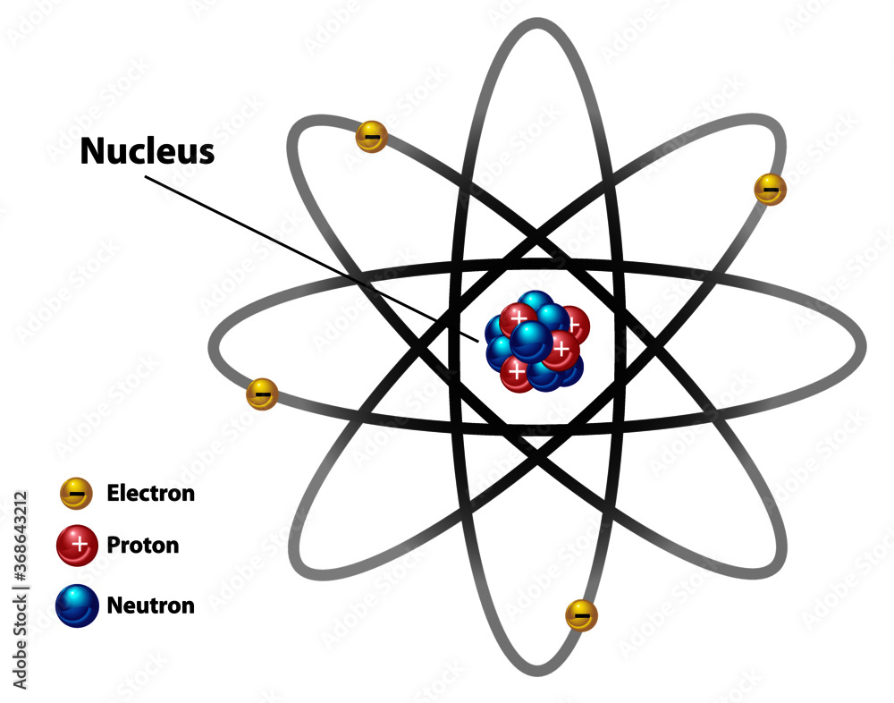

An atom is the smallest portion of matter, consisting of a dense central nucleus surrounded by revolving electrons in an orbital. The nucleus contains protons and neutrons.

| Particle |
Mass (kg) |
Charge (C) |
| Proton |
1.67 × 10-27 |
+1.6 × 10-19 |
| Neutron |
1.67 × 10-27 |
Neutral |
| Electron |
9.11 × 10-31 |
-1.6 × 10-19 |
The atomic number of an element is defined strictly by its number of protons. Atomic mass is measured in unified atomic mass units (u).
The Bohr Theory
Niels Bohr proposed a foundational model for atomic structure based on specific postulations:
- Electrons are restricted to specific "energy levels" or "stationary states," meaning they can only possess distinct energy values.
- Electrons rotate around the nucleus in these fixed orbits without radiating or absorbing any energy.
- When an electron receives energy, it jumps from a lower energy level to a higher one.
- The emission of radiant energy (electromagnetic radiation) occurs only when an electron drops from a higher energy level back to a lower energy level.
Practice Exercises
Test your knowledge on Subatomic Particles & Bohr Theory.
1. What is the mass of a neutron?
A) 9.11 × 10-31 kg
B) 1.67 × 10-27 kg
C) 1.6 × 10-19 kg
2. Which subatomic particle determines the atomic number of an element?
A) Electron
B) Neutron
C) Proton
3. According to the Bohr Theory, what causes an atom to emit electromagnetic radiation?
A) An electron absorbing energy while in a fixed orbit
B) An electron moving from a higher energy level to a lower energy level
C) A proton being ejected from the nucleus
4. What is the electrical charge of an electron?
A) -1.6 × 10-19 C
B) Neutral
C) +1.6 × 10-19 C